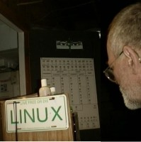

Making a Slideshow-type MPEG1 Video with GNU/Linux
By bhaaluu
This tutorial is for users who are interested in making an MPEG1 video using GNU/Linux and Free Open Source Software. The process described is partly automated with bash shell scripts, but otherwise still relies on handcrafting the video frame by frame. You are expected to know how to compile and install files from source code, use The Gimp, and use Audacity. The tutorial will describe when these tools are to be used. A total of six frames are used to make the video. One is a simple blank screen, filled with black. Two frames require using The Gimp's Text Tool. Three images are used as slides. The Gimp is used to scale those images to fit a specific image size. Audacity is used to edit sound for the video.
Software Tools:
- ImageMagick
- mpeg2encode
- The Gimp
- Audacity
- ffmpeg
- ffplay
- bash shell scripts:
- make_mpeg2encode_parfile
- duplicateFile
- fade
From ImageMagic, the 'convert' and 'mogrify' utilities will be used. 'convert' needs mpeg2encode in order to make an MPEG1 video. mpeg2encode can be obtained from: http://www.mpeg.org/MPEG/MSSG/. You'll need to compile and install it on your computer.
The Gimp is used to make the black screens, title screen, and credits screens.
Audacity is a sound editor, used to edit the sound clips for the video. Audacity exports different audio file formats, such as WAV, MP3, or Ogg Vorbis.
ffmpeg is a computer program that can record, convert, and stream digital audio and video in numerous formats.
ffplay is a video player.
Shell scripts are used to automate repetitive tasks, using variables and 'while' loops. The make_mpeg2encode_parfile script creates a parameter file for the mpeg2encode program.
In this tutorial, we'll make a slideshow-type video. Several slides will fade in and fade out in sequence. An animation sequence could easily be substituted for the slideshow.
It is very helpful to keep the video project organized, so the first thing to do is create a new directory:
$ mkdir newVideoNext, create several subdirectories in the newVideo/ directory:
[newVideo]$ mkdir 00black1001-1010 01title1011-1110 02video1111-1410 03credi1411-1510 04black1511-1520 05makeVideo originalsThese subdirectories will each hold a different set of files. The numbers are the number of frames for each set. This video will have a total of 520 frames. The first ten frames will be black. The title screen will have 100 frames. The video slideshow will have 300 frames. The credit screen will have 100 frames. Finally, there will be ten frames of black at the end.
Use a digital camera to take several photos, then download the photos from the camera to your computer. After the photos are on the computer, edit them in The GIMP, scaling all the photos so they fit in a 640x480 image size. Fill in any space around the image with black. Notes:
- Many movie-making methods expect the image size in x and y to be in multiples of 16. If not, depending on the version of mpeg_encode, they will either resize the images, core dump, or complain and not create the video.
- mpeg2encode expects the files to be numbered sequentially. A correct numbering sequence is: file0000.jpg, file0001.jpg, ..., file1000.jpg. An incorrect sequence is: file1, ..., file10, ..., file100 (because using the wildcard symbol (*) will not sort them correctly).
- Even though the various MPEG encoders can generate movies with various frame sizes, not all viewers can handle them. The best approach is to stick with either 640x480 or 320x240.
- Keep your frames uncluttered, especially if you are creating a movie with small frames (e.g. 320 x 240 movie).
- Avoid thin lines, dark blue lines on a black background, highly saturated colors, small objects, etc.
- Start with a good image. Any compression scheme will degrade the quality of the original.
- Don't create your frames using the GIF file format. GIF compresses the color information to 256 colors. MPEG does not have this restriction.
Save the digital photos as image0001.ppm, image0002.ppm, and image0003.ppm in the newVideo/ directory. PPM is an uncompressed image file that works well with mpeg2encode.
While you're in The GIMP, make a 640x480 blank image. Fill this with black and save it as blackScrn.ppm. Next, create the title screen, using the Text tool. Make the title screen with white letters on a black background and save it as titleScrn.ppm. Finally, create a credits screen with a black background and white letters, and save it as crediScrn.ppm.
This slideshow video will be made of these files:
blackScrn.ppm titleScrn.ppm image0001.ppm image0002.ppm image0003.ppm crediScrn.ppm
The screens will be resized to 320x240, so make the text large enough to read after the screens have been resized. To resize the images, use the convert utility:
$ convert -size 640x480 blackScrn.ppm -resize 320x240 00blackScrn.ppm
$ convert -size 640x480 titleScrn.ppm -resize 320x240 01titleScrn.ppm
$ convert -size 640x480 image0001.ppm -resize 320x240 02image0001.ppm
$ convert -size 640x480 image0002.ppm -resize 320x240 02image0002.ppm
$ convert -size 640x480 image0003.ppm -resize 320x240 02image0003.ppm
$ convert -size 640x480 crediScrn.ppm -resize 320x240 03crediScrn.ppm
$ convert -size 640x480 blackScrn.ppm -resize 320x240 04blackScrn.ppm
Move these working files to their respective subdirectories - i.e.,
[newVideo]$ mv 00blackScrn.ppm 00black1001-1010/
[newVideo]$ mv 01titleScrn.ppm 01title1011-1110/
[newVideo]$ mv 02image000?.ppm 02video1111-1410/
[newVideo]$ mv 03crediScrn.ppm 03credi1411-1510/
[newVideo]$ mv 04blackScrn.ppm 04black1511-1520/
Move the remaining original files to originals/.
[newVideo]$ mv *.ppm originals/
The next step is to duplicate the various files in each directory. This is where a bash shell script comes in handy.
#!/bin/bash
############################################################################
#name: duplicateFile
#date: 2008-06-20
############################################################################
if [ $# -ne 4 ]
then
echo "Usage: `basename $0` begin_range end_range filename duplicate"
exit 1
fi
# $1 is beginning of range
let num=$1
# $2 is end of range
while [ ${num} -le $2 ]
do
# $3 is filename
# $4 is duplicate
cp $3 $4${num}.ppm
num=$(($num+1))
done
############################################################################
If you put this script in your /home/bin directory, you will be able to execute
it from any directory you are in - assuming your /home/bin directory is in your PATH,
and you have made the file executable. To put your /home/user/bin directory in
your PATH, add this to the .bash_profile file in your home directory:
# set PATH so it includes user's private bin if it exists
if [ -d ~/bin ] ; then
PATH=~/bin:"${PATH}"
fi
Then make the script that is in the ~/bin directory, executable:
[bin]$ chmod u+x duplicateFile
This tutorial expects that the scripts are in the PATH.
Usage of this script requires the beginning and end numbers of the range of numbers that you want to duplicate, the name of the original file you want to duplicate, and the name of the duplicate file. The script adds the sequential number to the name of the file, so all that is needed is the name.
Change to the 00black1001-1010/ subdirectory and execute this command:
[00black1001-1010]$ duplicateFile 1001 1010 00blackScrn.ppm frame
The script creates frame1001.ppm to frame1010.ppm.
Remove 00blackScrn.ppm.
[00black1001-1010]$ rm 00blackScrn.ppm
Change to the 01title1011-1110 subdirectory and repeat the steps you did above, changing the numbers appropriately.
[00black1001-1010]$ cd ../01<TAB> (Use TAB completion.)
[00black1001-1010]$ duplicateFile 1011 1110 01titleScrn.ppm frame
[02video1111-1410]$ rm 01title.ppm
Next, change to the 02video1111-1410/ subdirectory and do the same thing to each image file in the directory. Each file, in this case, will be duplicated 100x.
[01title1011-1110]$ cd ../02<TAB> (Use TAB completion.)
[02video1111-1410]$ duplicateFile 1111 1210 02image0001.ppm frame
[02video1111-1410]$ duplicateFile 1211 1310 02image0002.ppm frame
[02video1111-1410]$ duplicateFile 1311 1410 02image0003.ppm frame
[02video1111-1410]$ rm 02image0*.ppm
In the 03credi1411-1510/ directory:
[03credi1411-1510]$ duplicateFile 1411 1510 03crediScrn.ppm frame
[03credi1411-1510]$ rm 03crediScrn.ppm
In the 04black1511-1520/ directory:
[04black1511-1520]$ /duplicateFile 1511 1520 04blackScrn.ppm frame
[00black1001-1010]$ rm 04blackScrn.ppm
That completes making all the needed files for the slideshow video. The next step is to make some transitions between the various screens. In this tutorial you'll create a fade in/fade out effect. Here is the script that does it:
#!/bin/bash
############################################################################
#name: fade
#date: 2008-06-20
############################################################################
if [ $# -ne 3 ]
then
echo "Usage: `basename $0` in|out filename fileNumber"
exit 1
fi
if [ $1 = "in" ]
then
num=$3
count=1
while [ $count -le 25 ]
do
fadein=$(($count*4))
mogrify $2$num.ppm -modulate $fadein $2$num.ppm
count=$(($count+1))
num=$(($num+1))
done
fi
if [ $1 = "out" ]
then
num=$3
count=1
while [ $count -le 25 ]
do
fadeout=$(($count*4))
mogrify $2$num.ppm -modulate $fadeout $2$num.ppm
count=$(($count+1))
num=$(($num-1))
done
fi
############################################################################
These are the commands to do the work:
[newVideo]$ cd ../01title1011-1110/
[01title1011-1110]$ fade in frame 1011
[01title1011-1110]$ fade out frame 1110
[01title1011-1110]$ cd ../02video1111-1410/
[02video1111-1410]$ fade in frame 1111
[02video1111-1410]$ fade out frame 1210
[02video1111-1410]$ fade in frame 1211
[02video1111-1410]$ fade out frame 1310
[02video1111-1410]$ fade in frame 1311
[02video1111-1410]$ fade out frame 1410
[02video1111-1410]$ cd ../03credi1411-1510/
[03credi1411-1510]$ fade in frame 1411
[03credi1411-1510]$ fade out frame 1510
The above commands fade the title, each slide, and the credits in and out.
The black screens at the beginning and end of the video don't need the fade-in,
fade-out effect.
Now copy all the PPM files in each subdirectory to 05makeVideo/.
[newVideo]$ cp 00black1001-1010/*.ppm 05makeVideo/
[newVideo]$ cp 01title1011-1110/*.ppm 05makeVideo/
[newVideo]$ cp 02video1111-1410/*.ppm 05makeVideo/
[newVideo]$ cp 03credi1411-1510/*.ppm 05makeVideo/
[newVideo]$ cp 04black1511-1520/*.ppm 05makeVideo/
After copying the files, you should have 520 files in 05makeVideo/.
[newVideo]$ ls 05makeVideo/ | wc -l
520
This version of the tutorial relies on a new bash script which can be found at this website. Change to 05makeVideo and run the make_mpeg2encode_parfile script. This script makes the parameter file that mpeg2encode relies on.
[newVideo]$ cd 05makeVideo/
[05makeVideo]$ make_mpeg2encode_parfile frame*.ppm
The make_mpeg2encode_parfile script takes the names of the frames as a parameter
and creates the mpeg2encode.par file.
Next, edit mpeg2encode.par in your favorite plain text editor (vi, right?):
lines
2. frame%4d /* name of source files */
7. 2 /* input picture file format: 0=*.Y,*.U,*.V, 1=*.yuv, 2=*.ppm */
8. 520 /* number of frames */
9. 1 /* number of first frame */
13. 1 /* ISO/IEC 11172-2 stream (0=MPEG-2, 1=MPEG-1)*/
14. 0 /* 0:frame pictures, 1:field pictures */
15. 320 /* horizontal_size */
16. 240 /* vertical_size */
17. 8 /* aspect_ratio_information 1=square pel, 2=4:3, 3=16:9, 4=2.11:1 */
18. 3 /* frame_rate_code 1=23.976, 2=24, 3=25, 4=29.97, 5=30 frames/sec. */
Line 2 is the name of the source file, plus space for four numbers.Line 7 is 2 because of the PPM files.
Line 8 should be the number of frames in the video.
Line 9 is the number of the first frame.
Line 13 is 1 because it is a MPEG1 video.
Line 14 is 0, for frame pictures.
Lines 15 and 16 are the size of the frames in the video.
Line 17 is 8. I don't know why. It works.
Line 18 is 3 for 25fps. This works well for the popular video upload sites.
Next, run mpeg2encode to make the video:
[05makeVideo]$ mpeg2encode mpeg2encode.par video.mpg
Don't worry about the overflow and underflow errors.
The video plays at 25 frames per second. There are 520 frames in the video, so it lasts a little over 20 seconds. The first 4 seconds are the title screen. The last 4 seconds are the credits screen. That leaves about 12 seconds of slideshow screens.
Use Audacity to edit a sound file. You can make your own, or find a free sound clip on the Internet and use it.
[05makeVideo]$ audacity your_sound_file.ogg
In Audacity, generate 4 seconds of silence before the slideshow, and 4 seconds
of silence after the slideshow. Audacity allows you to fade-in and fade-out the
sound, as well as copy-paste it, delete sections of it, and so forth. When
finished editing the sound file, export it as an Ogg Vorbis file, saved to
the 05makeVideo/ directory: sound.ogg
Finally, add the sound to the video with this command:
[05makeVideo]$ ffmpeg -i sound.ogg -s 320x240 -i video.mpg finishedVideo.mpg
It's time to watch the finished video!
[05makeVideo]$ ffplay finishedVideo.mpg
If you like it, create an account on YouTube, or another video site, upload your
video, and share it with the world!
You should now have a good idea of how to create your own customized slideshow-
type video, with fade-in, fade-out effects and sound, using free, open source
software.
Here is an example of this type of slideshow video on YouTube.
Talkback: Discuss this article with The Answer Gang

bhaaluu has been using GNU/Linux since first installing it on a PC in late 1995. bhaaluu founded PLUG (Piedmont Linux Users Group) in 1997. bhaaluu is a hobbyist programmer who enjoys shell scripting and playing around with Python, Perl, and whatever else can keep his attention. So much to learn, so little time.